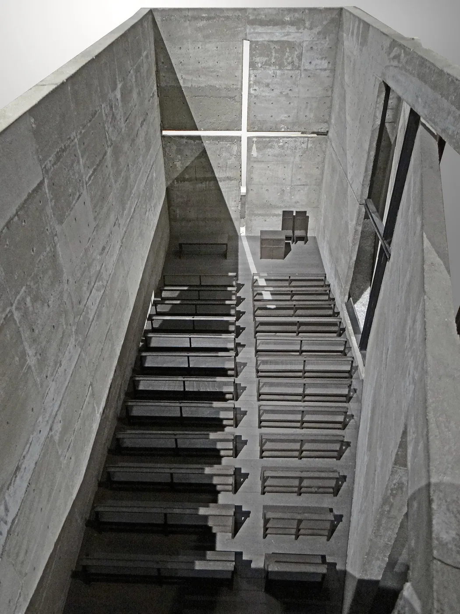

2/4 · Interior · Interior of the Church of the Light, designed by Tadao Ando, in Ibaraki, Osaka PrefecturePhoto: The original uploader was Bujatt at English Wikipedia · CC BY-SA 2.5 · source3/4 · Detail · Church of the Light by Tadao AndoPhoto: Chun-Hung Eric Cheng · CC BY 2.0 · source

4/4 · Interior · Model of Church of the Light by Tadao AndoPhoto: Jean-Pierre Dalbéra from Paris, France · CC BY 2.0 · source